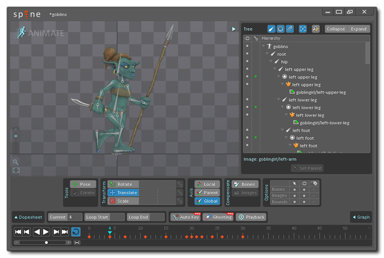

GameMaker Studio 2 tiene soporte para sprites no de mapa de bits en el foro de archivos SWF vectoriales o archivos Spine Skeletal Animation. Ambos formatos tienen sus ventajas y desventajas, y las dos secciones a continuación explican cómo importarlos en el editor de Sprite, así como un poco de información sobre cómo se representan.
GameMaker Studio 2 tiene soporte limitado para sprites vectoriales. En general, todos los sprites de GameMaker utilizan mapas de bits que, si bien son flexibles en términos de contenido, imponen limitaciones tanto al tamaño como al número de fotogramas posibles en un sprite antes de que el uso de la memoria se vuelva prohibitivo. Los sprites de vectores solucionan estas limitaciones almacenando y dibujando sus contenidos de forma diferente: en lugar de una cuadrícula de píxeles, que pueden convertirse en bloques o borrosos cuando se escalan, se dibujan como triángulos que se pueden ampliar sin perder definición, como se ilustra en la imagen siguiente:
Para ayudarlo a visualizar cómo se hace esto, la imagen que se muestra a continuación es del mismo vector Fireman sprite, solo que ahora podemos ver los polígonos que se usan para crear la imagen dentro de GameMaker: Studio:
Sin embargo, nada es gratis cuando se trata de programar juegos, y la compensación aquí con sprites vectoriales es que son más caros de dibujar que los sprites de mapa de bits y esta diferencia de velocidad aumenta a medida que aumenta la complejidad de la animación que se está importando. Además, su uso de memoria se ve afectado por su complejidad visual, a diferencia de los sprites de mapa de bits. Teniendo eso en cuenta, sí hacen posible agregar grandes gráficos animados de formas que serían imposibles utilizando los sprites de mapa de bits tradicionales.
En la otra cara de la ecuación de rendimiento, porque los sprites vectoriales solo dibujan los píxeles absolutamente necesarios (a diferencia de los sprites de mapa de bits que también "dibujan" el espacio vacío alrededor de la imagen) pueden ser más baratos desde la perspectiva de la GPU. Además, en general, los sprites de vector son mucho más pequeños que sus equivalentes de mapa de bits; para el ejemplo de bombero anterior, los tamaños de los distintos tipos de sprites son los siguientes:
Bitmap at 70x68 = 4x70x68 bytes x 12 frames = 223k
Vector = 54kSi cuadruplicas la resolución del sprite:
Bitmap at 280x272 = 4x280x272 bytes x 12 frames = 3570k
Vector = 54kEntonces, como puede ver, se puede ahorrar mucha memoria utilizando sprites vectoriales, y aún tenemos mucho potencial para ahorrar espacio en el futuro.
Actualmente GameMaker Studio 2 solo puede importar imágenes vectoriales desde archivos de formato SWF, y la forma de importarlas al programa es casi idéntica a la de agregar una imagen de mapa de bits normal. Para agregar un sprite vector, crea un nuevo sprite, que abrirá el diálogo estándar de Load Sprite, pero asegúrate de haber seleccionado *.swf del filtro de archivos en la parte inferior.
Al presionar el botón "cargar", se agregará la imagen vectorial o la animación al árbol de recursos, y se mostrará una barra de progreso a medida que se procese el archivo. Tenga en cuenta que, dependiendo de la complejidad del archivo, esto puede llevar un tiempo (hasta un minuto para las animaciones más complejas). Cuando finalice el procesamiento, volverá al diálogo de propiedades de sprites, que ahora se verá así:
Como puede ver, se parece al diálogo de sprite normal, con el primer fotograma del archivo vectorial que se muestra en la ventana de vista previa de la imagen a la derecha. Sin embargo, hay un par de cambios de un diálogo de sprites normal. En primer lugar, el botón Editar Sprite se ha ido porque no hay bitmaps para editar en este tipo de sprite, y en segundo lugar, se ha agregado un nuevo botón Show Sprite. Este botón abrirá el archivo vectorial en cualquier aplicación asociada a él. Esto normalmente sería el predeterminado para su navegador web, pero si no tiene un programa asociado con el archivo, entonces no pasará nada y el botón está desactivado (puede resolverlo abriendo Windows Explorer y haciendo clic derecho en un archivo vectorial, luego usando " abrir con " para elegir el programa que se asociará con estos archivos). También puede asociar un visor para estos sprites en la sección Preferencias generales - Rutas dentro de GameMaker Studio 2 y el botón Mostrar Sprite lo abrirá en lugar del visor predeterminado.
NOTA: La apariencia de la imagen en el editor de vista previa elegido no será la misma que se ve en el juego, ni cómo se ve en la ventana de vista previa del editor de sprites. La imagen vectorial se importará en el tamaño en el que se creó, que no es necesariamente el tamaño en el que se muestra la vista previa (los navegadores normalmente escalarán la imagen para que quepa, por ejemplo).También puede establecer la calidad del sprite de vector cuando se dibuja. Esto simplemente reducirá o aumentará el número de triángulos utilizados para generar el sprite, con el valor de calidad predeterminado de 50 normalmente suficiente para la mayoría de los juegos, sin embargo, debe experimentar con este valor si usa escalamiento extremo o tiene problemas de rendimiento. A partir de este punto, las otras partes del editor deberían funcionar igual que para los sprites de mapa de bits.
Hay una serie de cosas que debe tener en cuenta al importar sprites vectoriales, y lo más importante es que algunas de las funciones de sprite drawing y sprite management no son compatibles por razones técnicas, particularmente aquellas que dibujan solo una parte de un sprite., o que "sesgan" la posición de alguna manera (ver las funciones individuales draw_sprite _ * () para detalles exactos de los cuales). Sin embargo, las funciones básicas de dibujo de sprites son totalmente compatibles, al igual que las variables de sprite integradas. También puede establecer diferentes valores de anti-aliasing (AA) para los sprites SWF que se dibujan utilizando las funciones que se encuentran aquí: Dibujo de Sprites y Tiles.
También debe tener en cuenta lo siguiente:
- Al importar un archivo *.SWF, Actionscript no es compatible, por lo tanto, si su SWF depende de que funcione correctamente, es probable que no lo haga correctamente. Del mismo modo, cualquier clip de película incrustado que tenga su propia línea de tiempo solo mostrará su primer fotograma a lo largo de la animación, toda la animación debe estar en la línea de tiempo principal.
- Si su archivo vectorial tiene detalles particularmente finos, ocasionalmente puede encontrar agujeros o triángulos extraños en los sprites resultantes. Esto se debe a que a pequeña escala la geometría a veces se puede colapsar para crear formas que simplemente no triangulan bien. En este caso, tiene dos opciones: puede ampliar el contenido del archivo vectorial, lo que le dará al importador más espacio para jugar, o puede intentar reducir el nivel de detalle del objeto que se está rompiendo.
- GameMaker Studio 2 usa el tamaño de escenario del SWF como los límites del sprite resultante. Sin embargo, si tiene algo en el escenario fuera de estos límites , todavía se dibuja. Esto significa que debe intentar evitar poner algo fuera de los límites de su escenario si no desea que se muestre, o utilizar una capa de máscara para limitar el dibujo a esta área.
- El tamaño del escenario también afecta el tamaño de las máscaras de colisión que se generan, por lo tanto, si tiene un gran escenario y muchos marcos en la animación, puede consumir mucha memoria. Por lo tanto, solo use máscaras de colisión precisas si realmente lo necesita.
- Como un archivo SWF se crea a partir de varias capas, algunas de las cuales se superponen, alfa no funciona del mismo modo que con los sprites de mapa de bits: las áreas superpuestas no se verán tan transparentes como otras partes del sprite, ya que los píxeles se están dibujado varias veces.
- Los rellenos de mapa de bits son compatibles, aunque si utiliza rellenos de mapa de bits en mosaico como parte de su archivo SWF, debe asegurarse de que el mapa de bits tenga el tamaño de un power-of-two; de lo contrario, no se ajustará correctamente. También se admite el procesamiento de texto, pero debe incrustar la fuente en su archivo SWF para que se muestre en el sprite resultante. Además, actualmente solo se admite texto de línea única alineado a la izquierda.
Un objeto creado con animación esquelética, es aquel en el que se ha creado y animado un "esqueleto" base utilizando fotogramas clave para mover las partes componentes del esqueleto a lo largo del tiempo. Este esqueleto es entonces sin piel y de una textura del atlas y la animación resultante exportados en uno de los muchos tipos de archivos. Gamemaker: Studio le permite importar este tipo de sprite siempre que se haya exportado como *.json formato de archivo y tiene el archivo atlas de textura correctamente asociado ( *.atlas ) y archivo de imagen (como *.png ) en el mismo directorio.
IMPORTANTE: GameMaker Studio 2 solo admite un atlas de textura único por sprite.NOTA: Esta característica actualmente solo admite archivos creados con el programa Spine.Actualmente, GameMaker Studio 2 solo puede importar imágenes vectoriales de archivos de formato JSON creados por el programa Spine ; sin embargo, la forma de importarlos en el programa es casi idéntica a la de agregar una imagen de mapa de bits normal. Para agregar una animación esquelética, debe crear un nuevo elemento, que abrirá el diálogo estándar Cargar Sprite, pero asegúrese de haber seleccionado *.json desde el filtro de archivos en la parte inferior.
Al presionar el botón "cargar" se agregará la animación esquelética al árbol de recursos como un elemento, con una barra de progreso que se muestra a medida que se procesa el archivo. Tenga en cuenta que, dependiendo de la complejidad del archivo, esto puede tomar un momento o dos. Cuando finalice el procesamiento, volverá al diálogo de propiedades de sprites, que ahora se verá así:
Una vez que haya importado la animación, puede establecer las propiedades de colisión, pero tenga en cuenta que está limitado aquí simplemente a usar colisiones precisas o colisiones de cuadro delimitador, y que los datos de colisión para una animación esquelética se toman explícitamente de los datos proporcionados. GameMaker Studio 2 no genera ninguna máscara de colisión si no se cuenta con los datos del archivo importado, lo que significa que simplemente no tendrá colisiones de trabajo si las máscaras no están configuradas correctamente en el programa utilizado para crear la imagen que se está importando.
NOTA: Debido a la complejidad de las animaciones esqueléticas, la imagen de vista previa que se muestra en el editor de sprites no pretende representar con precisión su animación, sino que le brinda una imagen simple que representa la animación para visualizar en el editor de sala.A diferencia de los sprites de mapa de bits, el sprite de animación esquelética importado no se puede modificar en el editor de ninguna manera, pero hay varias funciones disponibles en el lenguaje GameMaker (GML) que se pueden usar para cambiar máscaras, establecer propiedades y controlar otros aspectos de la animación.
Hay una serie de cosas que debe tener en cuenta al importar sprites de animación de esqueleto, y lo más importante es que algunas funciones de dibujo de sprites y administración de sprites no son compatibles por razones técnicas, particularmente aquellas que dibujan funciones que solo dibujan una parte de sprite, o que "sesga" la posición de alguna manera (ver las funciones individuales draw_sprite _ * () para detalles exactos de los cuales). Sin embargo, las funciones básicas de dibujo de sprites son totalmente compatibles, al igual que las variables de sprite integradas. Además de estas funciones y variables, también puede configurar y cambiar las propiedades de la animación usando especiales skeleton_* funciones, que se enumeran y explican en la sección de referencia de Animaciones esqueléticas.